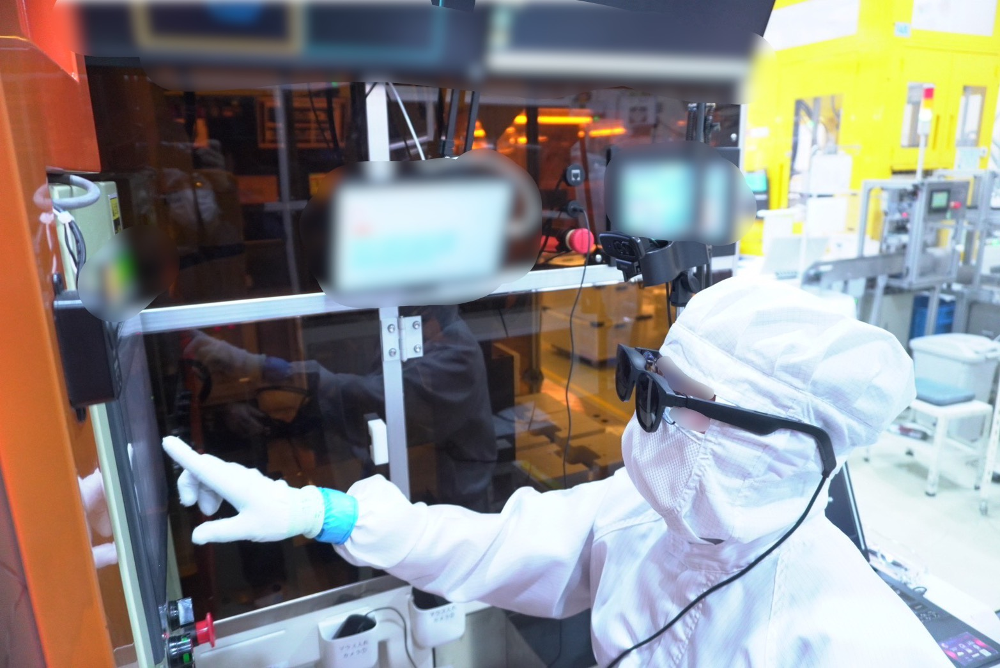
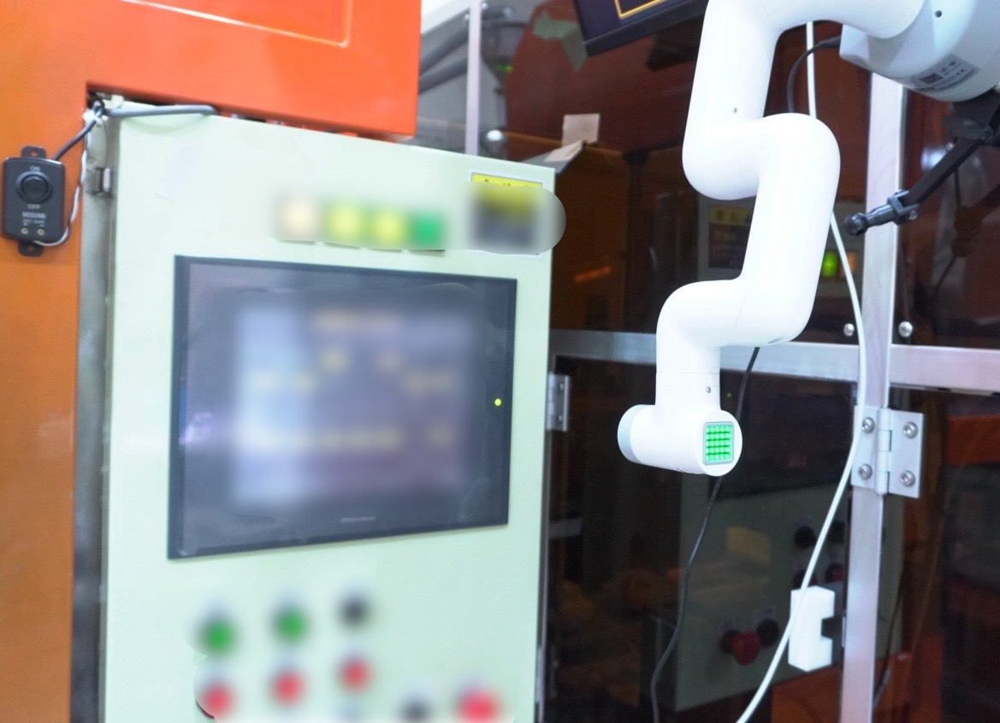

NEWS & CASE STUDIES
ニュース・事例
nanoFACTORYからのお知らせと、現場での取り組み事例をお届けします。
事例 / CASE STUDIES
作業認識AIの取り組み事例
カードをタップすると、作業認識AIの詳細ページへ移動します。
CASE 01 / 作業認識AIARグラス越しに、言葉の壁を越える現場教育
※ AR×実習生の実写を配置予定

外国人実習生がARグラスを着用すると、視界の中に作業手順がリアルタイムで投影されます。AIが現在の作業を認識し、次に行うべき動作・注意点を表示する仕組みです。
母国語の手順書がなくても、ベテランが横に立たなくても、標準作業をその場で再現。教育担当者は「最初の数回だけ」を見てあげれば十分。OJT工数を大きく圧縮できます。
OJT工数 ▲60% 目標(現場検証中)人の動きをAIが学び、ロボットが代替する
※ ロボット×フィジカルAI写真を配置予定

AIが現場の動作を認識する仕組みは、そのままロボット制御の入力としても使えます。ベテランの動きを学習データにして、ロボットアームに同じ作業を実行させる——いわゆるフィジカルAIです。
重作業・単純反復作業・夜勤帯の作業など、人がやらなくていい仕事を機械側に逃がす。人手不足の現場ほど効きます。
作業認識AI + ロボット制御を一括で検証ニュース
最新のお知らせ
現在、最新ニュースの準備を進めております。公開まで今しばらくお待ちください。